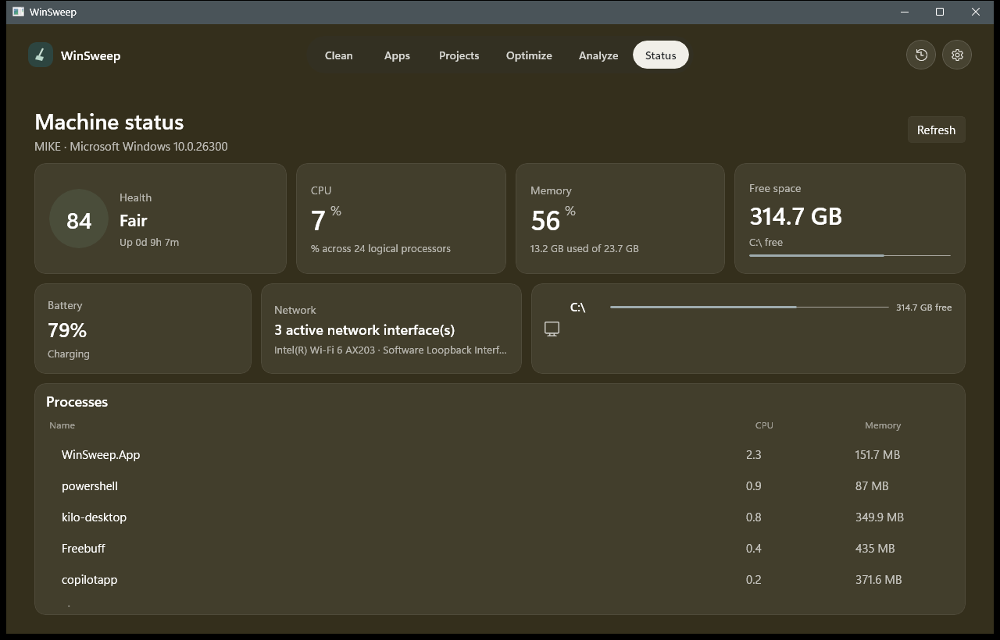
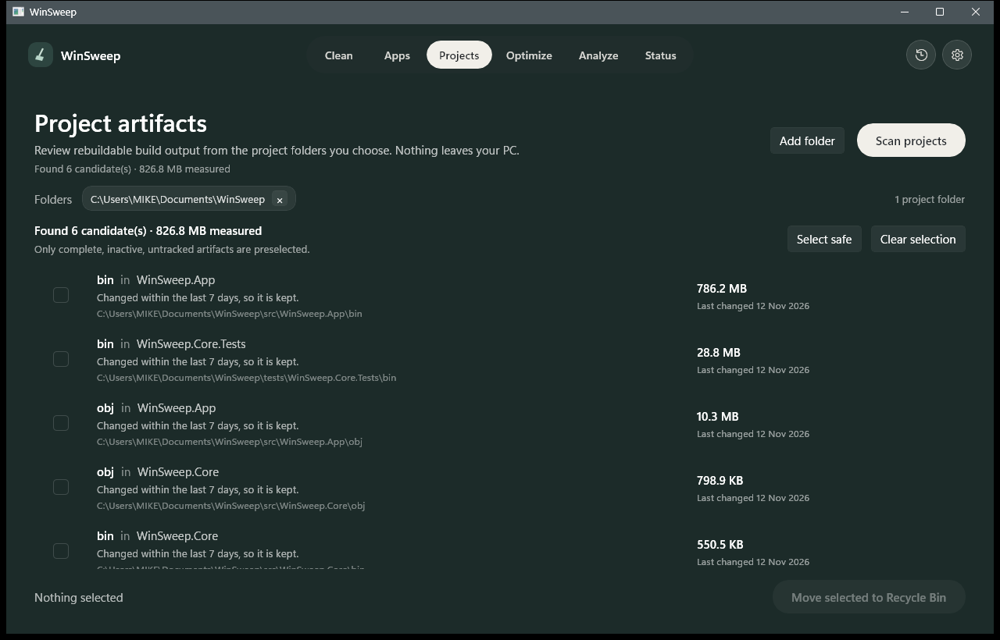

Nothing leaves your PC before you have looked at the list.
WinSweep measures the files that pile up without being yours, caches, crash dumps, leftovers from uninstalled software, build output you can rebuild, and explains every single one before anything moves to the Recycle Bin.
- Written in
- C# on WinUI 3, .NET 8
- Runs on
- Windows 10 1809 or newer, x64
- Licence
- Open source on GitHub

Real captures from the running app on this machine. The tint behind the window follows the page, the same way the app shifts its own background as you move between screens.
Every cache rule carries its own reason
Twenty-one known locations, from the user temp folder to the NuGet package cache. Each rule states why its contents are disposable, how old a file has to be, and which running program makes the location off limits. Old enough, nothing running, nothing personal: only then is it ticked for you.
Build output, only where you point it
WinSweep looks for recognised output such as node_modules, target,
.next, .venv and obj, and only inside folders that
carry a real project marker. Documents, Downloads, OneDrive and the rest of your profile
are not scanned unless you choose them.

- kept Changed in the last seven days
- kept Contains files tracked by Git
- kept Holds a key, a credential or an
.env - kept Could not be read in full
- offered Old, complete, untracked, and rechecked at the Recycle Bin
Uninstalling, finished properly
The vendor's uninstaller still does the work. What WinSweep adds is the part most uninstallers skip: the folders left behind, offered by exact name and reviewed rather than swept.
-
The application uninstalls itself
The registered uninstaller runs and decides what it removes. WinSweep reports its exit code rather than a claim.
-
Leftovers are matched by exact name
A folder has to carry the application's own name or its install folder name. There is no vendor prefix rule and no wildcard.
-
Settings stay unticked
Roaming profile data and Microsoft Store app data can hold saved work, so they are listed with what they may contain and left unchecked.
-
What goes, goes to the Recycle Bin
Every folder moves through the Windows shell, which is what makes a mistake recoverable instead of permanent.
The rules the code enforces
One guard decides every removal. It refuses drive roots, system folders, the profile root, and anything reached through a junction or symbolic link. What follows is behaviour taken from the code and its tests, not from a feature list.
- Reviewed before removeda scan produces a list, never a deletion
- Recoverable by defaultRecycle Bin through the shell, undo intact
- Unknown stays unknownan unreadable folder reports a lower bound, never zero
- A running app keeps its cacheChrome, Edge and Firefox are protected while open
- Recent files are left aloneevery rule has a minimum age to pass
- Personal data is never preselectedprofiles, settings and Store app data stay unticked
- Only exact namesno vendor-wide or wildcard matching
- Every action is loggedone JSON line per action, appended locally
- Maintenance is boundedone known action, a stated effect, a hard timeout
- Elevation is asked foran administrator task never starts without one
- Project roots are explicitonly folders you choose are scanned
- Artifacts are verified twicerechecked at the moment of removal
WinSweep for Windows
A desktop app, no account, no background service.
- System
- Windows 10 1809 or newer, x64
- Runtime
- Bundled .NET 8, nothing to install first
- Package
- About 226 MB, or an MSIX build
No packaged installer is published yet. Until one is, the app builds in a single command:
git clone https://github.com/mikeperac-cyber/WinSweep.git
cd WinSweep
.\build.ps1 -Configuration Release -PublishNeeds the .NET 8 SDK and Visual Studio 2022 or newer with the .NET desktop workload, because the WinUI XAML compiler runs as an MSBuild task.
What it does not do
- No registry cleaner, no driver updater, no boost button.
- No background service, tray icon or schedule. It runs when you open it.
- No uninstalling Store applications itself. Windows owns that, so the button opens the right Settings page.
- No guessing at a size it could not read. Unknown is displayed as unknown.
- No cleaning of arbitrary files, only recognised folders with a stated reason.
How it is put together
- InterfaceWinUI 3 with MVVM, written in C#
- Corea separate library that owns the file system work
- TestsxUnit over the safety-critical paths
- Recordappend-only JSON log in the app data folder
- Buildself-contained, or packaged as MSIX with a signing script
The window never touches a file. Everything passes through the core library, which is what makes the dangerous parts testable without a screen.